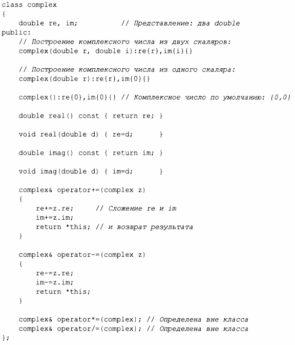
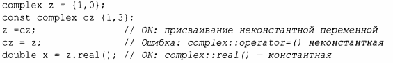
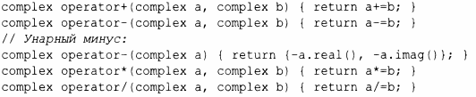
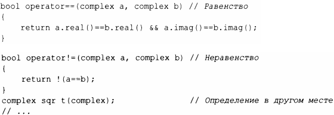
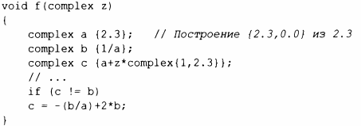

⇐4.2 Конкретные типы Содержание 4.2.2 Контейнер⇒
"Классическим пользовательским арифметическим типом" является тип complex:
Это немного упрощенная версия комплексных чисел complex стандартной библиотеки (§ 14.4). Само определение класса содержит только операции, требующие доступа к представлению. Представление же простое и традиционное. По практическим соображениям оно должно быть совместимо с тем, что предоставлял Fortran 60 лет назад, и нам нужен обычный набор операторов. В дополнение к логическим требованиям класс complex должен быть эффективным, иначе он не будет востребован пользователями. Это означает, что простые операции должны быть встраиваемыми (inline), т.е. эти операции (такие, как конструкторы, += или imag ())должны быть реализованы без вызовов функций в сгенерированном машинном коде. Функции, определенные в классе, являются встраиваемыми по умолчанию. Можно явно запросить встраиваемость функции, предварив ее объявление ключевым словом inline. Реализация промышленного типа complex (наподобие имеющегося в стандартной библиотеке) тщательно настраивается для выполнения встраивания.
Конструктор, который может быть вызван без аргумента, называется конструктором по умолчанию. Таким образом, complex() является конструктором complex по умолчанию. Определив конструктор по умолчанию, вы исключаете возможность наличия неинициализированных переменных данного типа.
Спецификаторы const для функций, возвращающих действительную и мнимую части, указывают, что эти функции не изменяют объект, для которого вызываются. Константная функция-член может быть вызвана как для константных, так и для неконстантных объектов, но неконстантная функция-член может быть вызвана только для неконстантных объектов. Например:
Многие полезные операции не требуют непосредственного доступа к представлению complex и поэтому могут быть определены отдельно от определения класса:
Здесь я использовал тот факт, что переданный по значению аргумент копируется, так что я могу модифицировать аргумент без воздействия на копию в вызывающей функции и использовать результат как возвращаемое значение.
Определения операторов== и ! =незамысловаты:
Использоваться класс complex может следующим образом:
Компилятор преобразует операторы для работы с числами complex в соответствующие вызовы функций. Например, с != b означает operator ! = (с, Ь), а 1/а означает opera tor / ( complex {1}, а) .
Пользовательские операторы ("перегруженные операторы") должны использоваться разумно и осторожно. Синтаксис операторов фиксируется языком, так что вы не можете определить унарный оператор /. Кроме того, невозможно изменить значение оператора для встроенных типов, поэтому вы не можете переопределить+ так, чтобы он работал для int как вычитание.